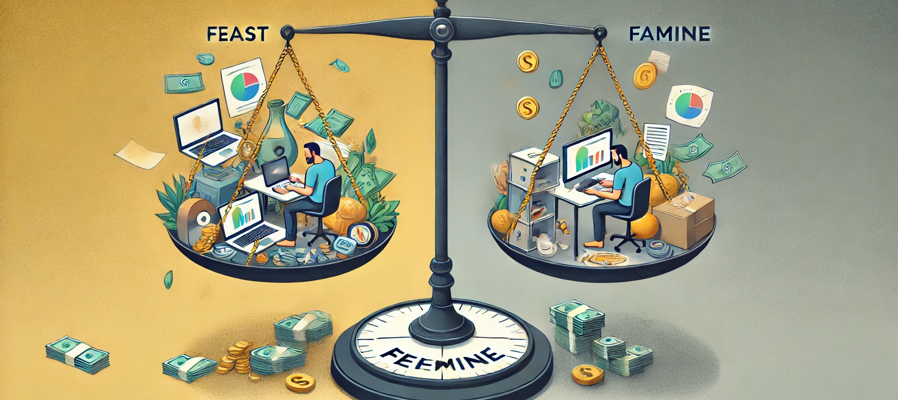

Exploring the Freelancer’s Journey in the Creative
Industries
Freelancing has proved itself a viable career path within
the creative
industries, offering flexibility, independence, and the
opportunity to
work on diverse projects. However, freelancing can also
bring unique
challenges that might not suit everyone. In this post, we’ll
explore
whether freelancing is truly the road to success for members
within the
creative industries, e.g. graphic designers, web developers,
game
developers, animators, and discuss different strategies to
thrive as a
freelancer.
The Appeal of Freelancing in Creative Fields
One of the biggest attractions to freelancing is the freedom
of working
on your own terms. As a freelancer, you have control over
the clients
you work with, the projects you take on, and your work
schedule. This
flexibility is particularly valuable within the creative
industries,
where innovation and freedom of expression are paramount.
Freelancing
allows you to pursue projects that truly resonate with your
passions or
expertise, giving you the freedom to explore meaningful work
without
being confined to the structure of a traditional 9-to-5 job.
Additionally, freelancing offers the chance to expand your
personal
portfolio rapidly by working on a variety of projects across
different
industries. As mentioned in my first blog post, this kind of
exposure
helps you build a diverse body of work and establish
yourself as a
versatile professional.
Flexibility and Creative Freedom
People working in freelance often find the option to choose
their
projects liberating. Instead of working a specific role in a
certain
company, freelancers can choose to explore various
industries and
fields, expanding your skill set and making your portfolio
more diverse.
This is important for creatives looking to gain insight into
new fields,
experiment with different styles, or focus on their
passions.
The freelance lifestyle also allows you to align your work
with your
personal values and interests. Many people find corporate
jobs to be
restraining with various constraints, while freelancing
offers the
possibility of working on a project that truly resonates
with your
passion, or technical vision.
Establishing a Strong Freelance Career
While freelancing may seem like an easy win-win, becoming
truly
successful requires more than just landing projects. It’s
essential to
establish a memorable personal brand and maintain a strong
portfolio
that effectively showcases your expertise and experience.
Keeping your
portfolio up to date is key to attracting potential clients.
Platforms
like GitHub
(for
developers), Dribbble, or ArtStation (for designers and
artists) offer
excellent ways to highlight your work in a well-curated,
professional
manner.
The Challenges of Freelancing
Freelancing certainly sounds appealing, but it comes with
its own unique
set of challenges. One of the biggest hurdles is securing a
steady
stream of work. Unlike traditional employment, where job
security, a
regular income, and benefits are often guaranteed,
freelancers are
constantly searching and hustling for new clients and
projects. This
unpredictability can lead to financial strain, particularly
in the early
stages of building a freelance career.
Feast or Famine Cycle
The “feast or famine” cycle is a well-known reality
for many
freelancers. You might have a month overflowing with
projects,
only to face a dry spell the next. Navigating this
inconsistency
requires strong financial planning and resilience in
marketing
yourself to new clients. Many freelancers use tools
like Trello
or Notion
to
stay organized, manage tasks, and maintain smooth
client
interactions, helping to keep everything on track.

Wearing Many Hats
In addition to managing client interactions, freelancers
must also
handle administrative tasks such as contracts, marketing and
invoicing.
In many ways, freelancing is like running a small business,
which is why
having strong self-promotion skills can significantly ease
the process
and help you stand out in a competitive market.
Platforms like LinkedIn and Instragram can be invaluable for
self-promotion. It is essential to regularly post updates,
new projects,
or professional achievements on your social media platforms
to keep your
network engaged, and remind potential clients of your
persistence, and
availability.
Building your personal brand is essential, even for those
new to the
field. Sharing updates on university projects or
highlighting new tools
you’re learning can help create a professional online
presence. Finding
something that makes you stand out—whether it’s a technical
skill,
unique service, or design style—can set you apart in a
crowded market.
Freelancing vs. Full-Time Employment
Considering all the points thus far, the decision between
freelancing
and full-time employment isn’t always easy. A full-time job
offers
stability, regular income, and a clear career path, making
it ideal for
those who prefer structure. On the other hand, freelancing
suits
individuals who value flexibility and variety.
The following GIF offers a glimpse into the
impressive range of
work completed by my brother’s company,
Infinitus Interactive
, highlighting just a few of the many innovative
projects
they’ve successfully delivered to clients.
Over the years, his company has achieved significant
success in
the competitive freelancing landscape, consistently
delivering
high-quality work across a wide variety of projects
for an
extensive and diverse range of clients.
With expertise in Augmented Reality, he produces
professional
simulation programs, web pages, mobile applications,
and much
more for a diverse range of clients.
My brother's company, founded in 2020 after he
graduated from
Abertay University in Dundee, Scotland, has quickly
established
itself in the freelancing industry.
His expertise in Virtual Reality, along with a focus
on
producing cutting-edge simulation programs and
mobile
applications, has allowed him to collaborate with
clients from
various industries.
Beyond AR, as part of his team, we also develop
interactive
websites, creative digital solutions, and
user-centered designs
that cater to the needs of businesses worldwide.
Dynamic Content and Portfolio Examples
If you are a freelancer, having a dynamic and engaging
portfolio is
essential for attracting clients. Embedding dynamic media
like photos
and videos, or even interactive elements of the page itself
or relating
to past work gives potential clients an insight into your
capabilities
and professionalism.
In my portfolio, I’ve used visual examples to highlight the
diversity of
my work. For example, in the previous blog post I have added
screenshot
examples of previous web development projects
that showcase
my knowledge in building user-friendly, responsive sites. By
linking to
these sites, potential clients can explore the details of my
projects,
allowing them to assess whether my style and skill suits
their needs.
As a web, mobile or game developer you can also link to your
GitHub
to
showcase code repositories, which I have down throughout
these blog
posts, or as a graphic designer or animator, your Dribbble
profile for
visual design work.
Conclusion: Is Freelancing the Right Path for You?
While freelancing can be a rewarding option in the creative
industries,
it requires strategic planning, discipline, and
adaptability. If you
value creative freedom and independence, freelancing may be
a fulfilling
way to achieve your career goals. However, it’s not without
the
difficulties it creates- financial instability, the pressure
of managing
everything by yourself, and the challenge of consistently
finding work.
Ultimately, the key to success in freelancing lies in
balancing your
creative ambitions with strong business sense. Whether you
opt for
freelancing or a full-time role, it’s essential to
continually improve
your skills, maintain a polished online presence, and
nurture business
relationships. By adopting the right mindset and approach,
both
freelancing and traditional employment can pave the way for
a rewarding
and successful career in the creative industries.